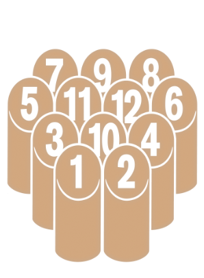
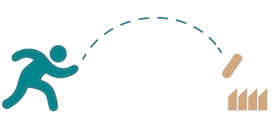
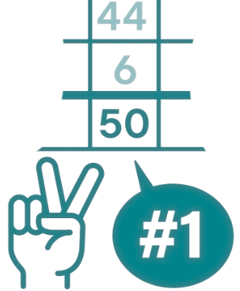

IL GIOCO
Il gioco si svolge con 12 birilli di legno numerati da 1 a 12 e un birillo di lancio: il Mölkky.
I birilli vengono disposti nella formazione standard, come in foto. I giocatori o le squadre si posizionano a circa 3 metri dalla formazione.
L’area di lancio deve essere delimitata e non superata dopo il lancio.
Dopo ogni lancio, i birilli devono essere rialzati esattamente nel punto in cui sono caduti, mantenendo l’evoluzione naturale del campo di gioco.
Obiettivo
Raggiungere 50 punti esatti.
Attenzione
Se un giocatore o una squadra supera i 50 punti, il punteggio viene riportato a 25.
Punteggio
- Se cade un solo birillo, si ottengono i punti corrispondenti al numero riportato su quel birillo.
- Se cadono più birilli, il punteggio corrisponde al numero totale dei birilli abbattuti.
- I birilli devono essere completamente a terra per essere considerati validi. I birilli inclinati o appoggiati non contano.



DOVE SIAMO
Oggi i nostri ritrovi si tengono al Dumbo - Officina Bistrot, nello spazio del Salotto Verde. Un punto di riferimento settimanale per appassionati, curiosi e chiunque voglia avvicinarsi al Mölkky in un ambiente aperto e accogliente.